El presidente de la Región de Murcia , Ramón Luis Valcárcel , anunció hoy que el borrador del Plan Hidrológico Nacional ( PHN ) entrará en el Consejo Nacional del Agua ( CNA ) a primeros de julio para ser debatido , y pidió a los componentes de este órgano que actúen con " diligencia y urgencia " , pues Murcia y media España " no pueden esperar más ".
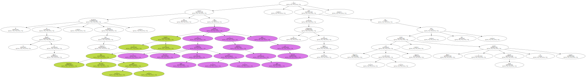Valcárcel fue informado sobre este asunto por el presidente del Gobierno , José María Aznar , en la reunión que mantuvieron en el Palacio de la Moncloa , en la que hablaron , además , sobre infraestructuras , como el tren de alta velocidad a Levante , financiación autonómica e inmigración.
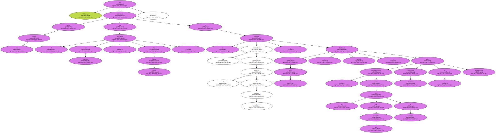Después de la entrevista , Valcárcel insistió ante la prensa que hablar de agua es " obligado " para media España y Murcia , región que recibió en el último año hidrológico 153 litros por metro cuadrado de lluvia , y presenta un déficit de 1.064 hectómetros cúbicos anuales.
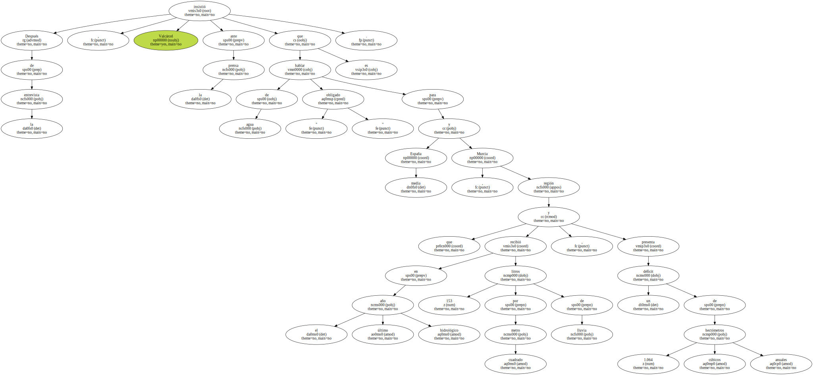Recordó la dependencia de la región de las lluvias y del trasvase Tajo-Segura , que en este año ha superado los 500 hectómetros cúbicos , y el " agobio " para la agricultura que supone la escasez de agua , así como riesgo de pérdida de masa forestal , además de incidir en que Murcia necesita también agua para el consumo humano , la industria y el turismo.

Así , pidió un " planteamiento riguroso y definitivo " en el PHN para solucionar la escasez de agua , por lo que calificó de " gran noticia " el compromiso de Aznar para que el borrador entre el CNA en la primera quincena de julio , después de que la Ley de Aguas de 1985 ya " mandatara " para que se elaborara un plan de este tipo.
En este sentido , dijo que hoy se hacía efectivo por Aznar el anuncio de que la " Región de Murcia y , por supuesto , la España que necesita agua , la va a tener a partir de un instrumento tan importante , decisivo y definitivo como es el Plan Hidrológico Nacional ".
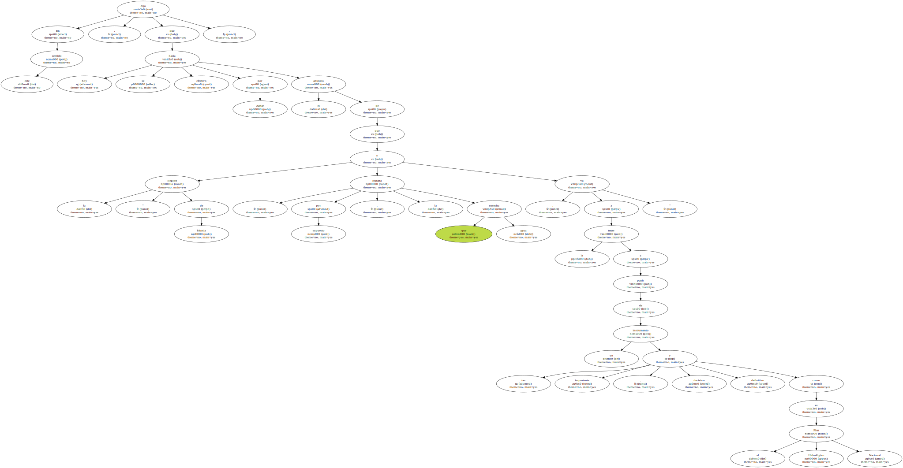Valcárcel se refirió al Libro Blanco del Agua , donde se indica " la necesidad de traspasar agua " a las cuencas deficitarias y se cita en concreto un " trasvase externo " para el Segura , como respuesta al ser preguntado por si Aznar es partidario o no de las derivaciones de agua , algo que Valcárcel no precisó.
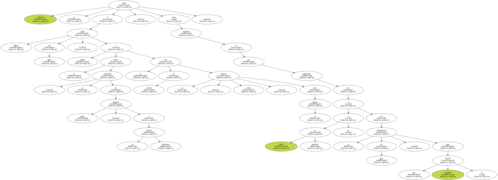Reiteró la importancia de la depuración del río Segura , " el más contaminado de Europa " , y recordó que , aparte del plan actual de depuración , es necesario uno " más ambicioso " de regeneración de riberas y reforestación , y que el ministro de Medio Ambiente , Jaume Matas , ha hablado de este asunto con él y con el presidente de la Comunidad Valenciana , Eduardo Zaplana.
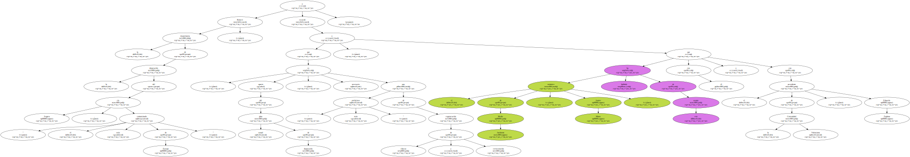Respecto al próximo sistema de financiación autonómica , Valcárcel señaló que los planteamientos de Zaplana son " lógicos y sensatos " , aunque mencionó " matices " en los que se entrará cuando se comience a negociar , en el sentido de " no es tanto el poder obtener mayor porcentaje de IRPF para ser gestionado por las comunidades , cuanto el introducir nuevos impuestos de carácter especial ".
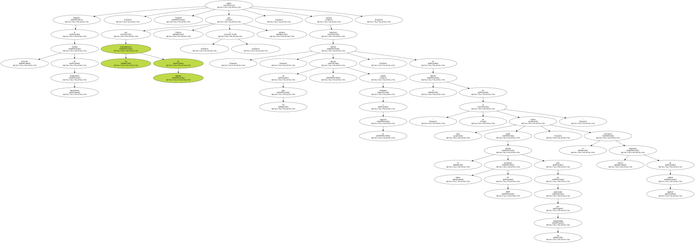Sobre infraestructuras , destacó el compromiso manifestado por Aznar en la reunión de seguir el " ritmo " y las " planificaciones " para dotar a todo el Levante de un ferrocarril de alta velocidad , " con vistas al progreso de estas comunidades ".
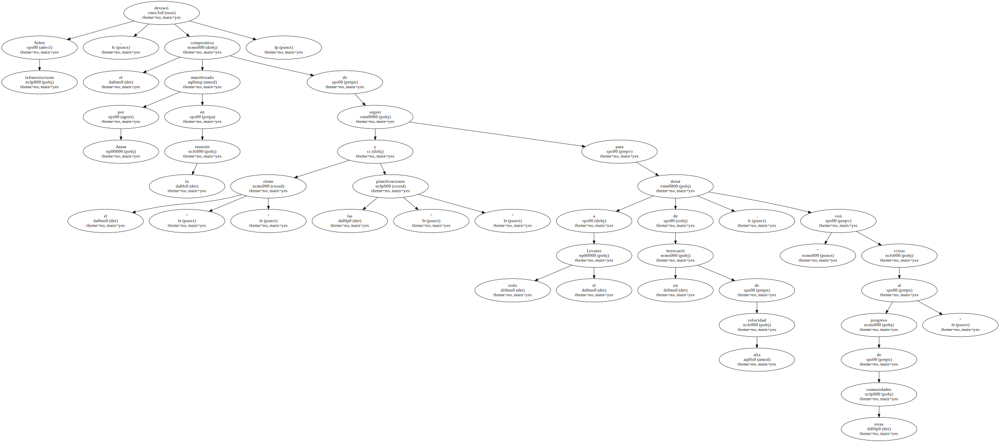Además , anunció que la autopista Cartagena-Alicante estará terminada en el primer trimestre de 2001 , y la autovía Murcia-Albacete , en el primer semestre del mismo año.
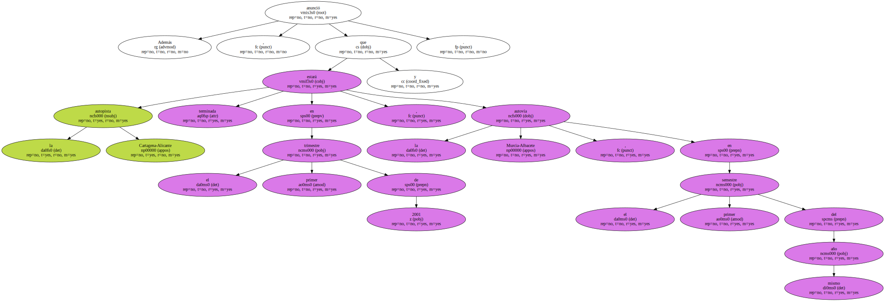Valcárcel y Aznar coincidieron también en la necesidad de una " inminente reforma " de la Ley de Extranjería para lograr " una mayor integración " social de los trabajadores inmigrantes.
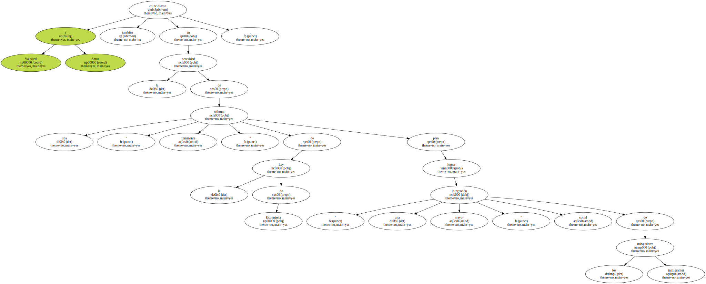" Hay que ordenar la llegada y la estancia para conseguir la integración y la mayor dignidad para quienes vienen a trabajar " , dijo el presidente autonómico.
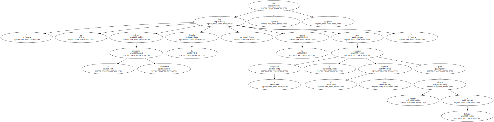El ministro portavoz del Gobierno , Pío Cabanillas , destacó como anuncio de " gran trascendencia " para Murcia el de la presentación del PHN , " probablemente en las próximas semanas " , ya que la escasez de agua es " un problema serio en el contexto nacional ".
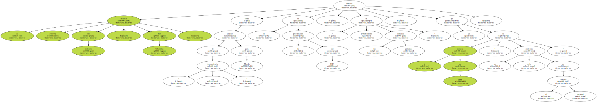Resaltó también la coincidencia , en líneas generales , entre los gobiernos central y autonómico para mejorar la integración de los inmigrantes.
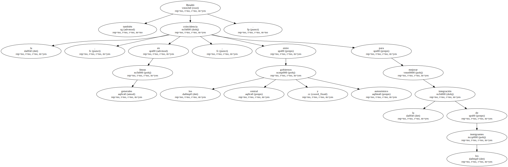